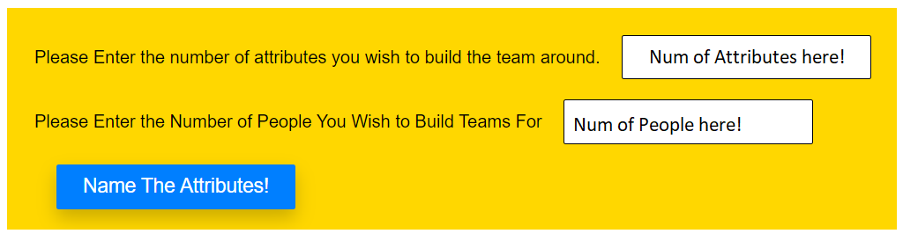
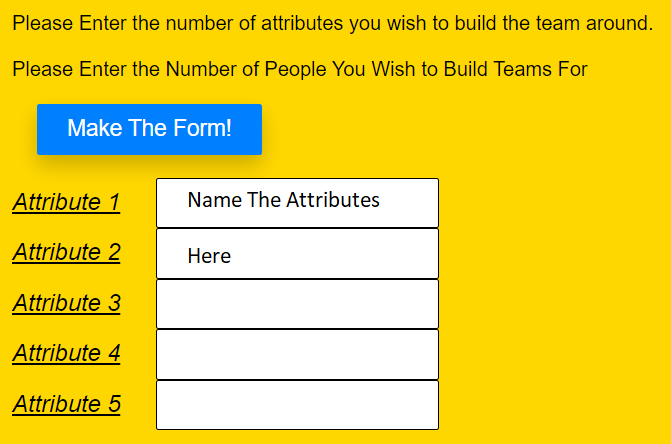
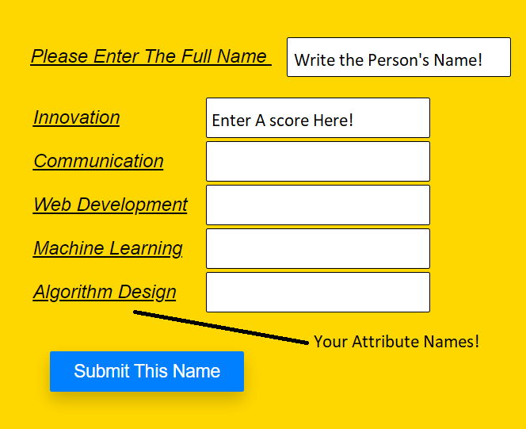
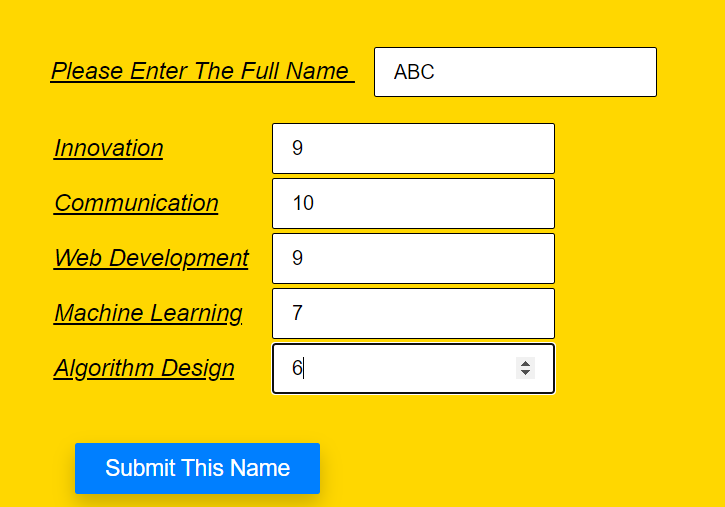
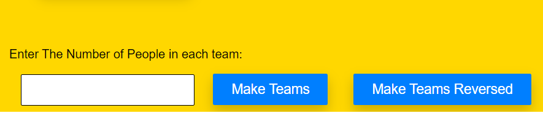
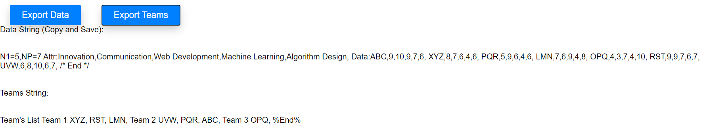
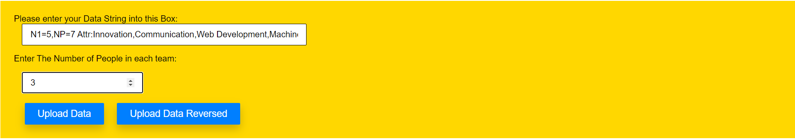

Help!
Don't Worry, Help is Here!
The Guide Below is for New Users or Users working on a New Team
Starting
As you currently are a new user, or are working on new data, you will want to click on the button saying "Enter Data".
This will open up a new form which asks you how many attributes you are working with. These attributes refer to the qualities
you want to keep in mind while you build the teams. It could range from Soft Skills such as Teamwork, Leadership and Communication
to Hard Skills such as Web Development, Machine Learning, Artificial Intelligence, and so on. It depends on your need!
So, Please enter the number of these desired attributes as shown in the image below.
Also, don't forget to write the number of people
who you wish to divide into teams!

Naming the Attributes
Once you have written how many attributes you want to use, you can simply name them, in any order. Once you have named them
please click on the Make Form Button

Filling in The Entries
Now that you clicked on the Make Form Button, the attribute names that you had given now appear correctly beside an appropriate
textbox. Enter the name of the person. Please do not use any of the banned symbols ", : % \" as they will interfere with the
Data string generation process. Then, fill in the appropriate value of each attribute. This is explained below.

Values for Attributes
You may choose any positive integer for these values. There is no limit to the maximum score for each attribute.
However, we recommend setting it as 10 or 100. Nevertheless, it can be anything best suited to you (you do not need to enter this maximum to tell us what it is).
We also recommed that you keep larger numbers as indicative of higher skill (for example, out of 10, 10 is the best). A sample is filled below
DO NOT CLICK ON THE SUBMIT BUTTON TWICE. IT WILL RESULT IN AN ERROR.

How Do I know When I'm done filling the values?
As soon as you finish adding data for the same number of people as you declared at the start, the following should open (in image below).
Please fill the textbox that opens up. This textbox asks how many people should be in each team. It is alright if there is an uneven amount of people
the program caters for this situation as well! :)
DO NOT FILL ANY PREVIOUS TEXTBOX AGAIN. IT WILL RESULT IN AN ERROR.

Normal Or Reverse?
This is an important point, as this determines how the teams are formed. If you click on the button "Make Teams", the teams will be
made in a manner to have similar people together according to their attributes. This is useful when you may want to have people
working together on a particular module, where the same kind of skills are needed.
Sometimes, you may want to have people with different skills in the same group. In that case, simply click on the button
"Make Teams Reversed" when it appears and you have filled all the spaces!
Saving The Results
You can Save the data in 2 ways. One way, you can click on Export Data button, which would export a "Data String" .
This can be used in the future, as a direct means of re-forming teams, or forming alternative teams (with a different number of people per team or reversed teams).
To use this data string, read the guide below for prior users.
Alternatively, you can use the "Export Teams" Button. This will export a string which contains the names of the members in each team.
This is simply for your reference.
In my opinion, the best way is to extract both, Data and Teams, and keep them for future reference!

The Guide Below is for Prior Users Who Have A Data String From Our Website
Importing Data Directly
When you Open the "Make My Teams" page. If you click on the button "Import Data", you will be given two textboxes. As shown below.
Similar to the image, enter your previous DataString into the large Textbox. Also input the number of people per team as shown in the
image. If you wish to sort it in reverse (that is, have the most diverse teams possible) click on the Button "Upload Data Reversed".
If you want to have people paired according to the closeness of their skills click on "Upload Data".
Voila! Your Teams Are Already Ready!
